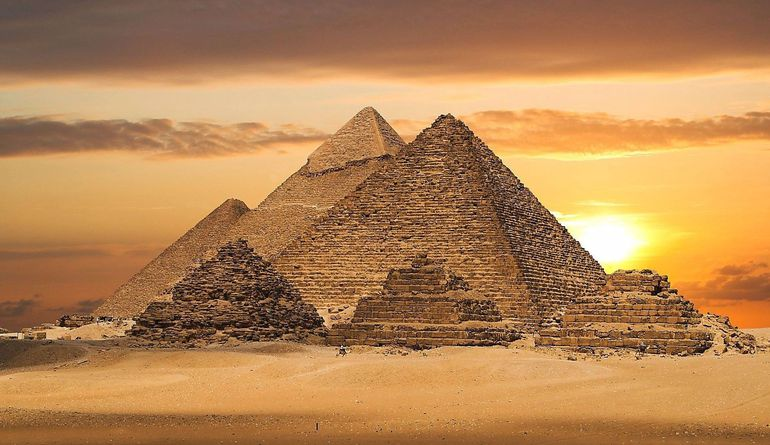

Египетские пирамиды

Египетские пирамиды — древние каменные сооружения пирамидальной формы, расположенные в Египте.
Количество объектов, идентифицируемых как египетские пирамиды, варьируется от 118 до 138 (по данным ноября 2008 года). Большая часть пирамид была построена в качестве усыпальниц для фараонов Древнего и Среднего царств. Древнейшие из известных пирамид находятся в Саккаре. Самой древней считается пирамида Джосера, построенная архитектором Имхотепом в период с 2667 по 2648 гг. до н. э.
Самые известные пирамиды находятся на окраине Каира в Гизе, три из которых до сих пор являются одними из крупнейших сооружений, когда-либо построенных человеком. Пирамида Хеопса является самой большой пирамидой в Египте и входит в число Семи чудес света.
Самые большие пирамиды Египта
- Пирамида Хеопса (IV династия): размер основания — 230 м (высота — 146,6 м);
- Пирамида Хефрена (IV династия): 215 м (144 м);
- Розовая пирамида, Снофру (IV династия): 219 м (105 м);
- Ломаная пирамида, Снофру (IV династия): 189 м (105 м);
- Пирамида в Мейдуме, Снофру (IV династия): 144 м (94 м);
- Пирамида Микерина (IV династия): 104,6 × 108,5 м (66 м);
- Пирамида Джосера (III династия): 121 × 109 м (62 м).